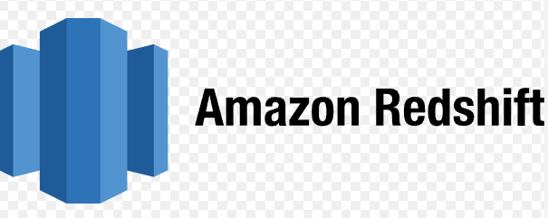
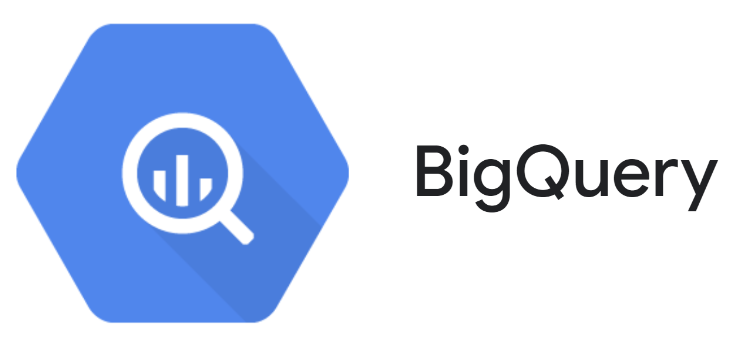
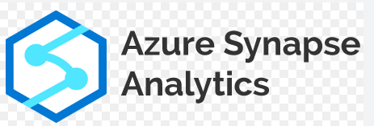
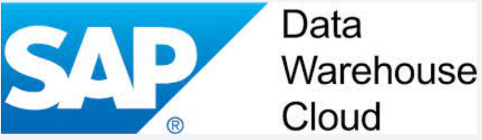

Top 5 Data Warehouses for 2023
Table of Contents
Introduction
Data warehouses are essential to modern enterprises because they offer a consolidated platform for managing and analyzing massive amounts of data. We will examine the top 5 data warehouses for 2023 in this post, including Snowflake, AWS Redshift, BigQuery, and Azure Synapse, SAP Data Warehouse Cloud.

By jensenartofficial on pixabay
Snowflake
Snowflake is a cloud-based data warehouse service that enables users to store, query, and analyze data from various sources and formats using a scalable and secure platform.
-
Separation of storage and compute: Snowflake decouples the data storage from the data processing, allowing users to scale up or down the compute resources independently from the storage capacity. This enables users to pay only for the resources they use and optimize their performance and cost.
-
On-the-fly scalable compute: Snowflake allows users to create multiple virtual warehouses that can run queries on the same data concurrently without affecting each other. Users can also adjust the size and number of warehouses dynamically to match their workload demands and achieve high performance and concurrency.
-
Data sharing: Snowflake enables users to share data securely and easily with other Snowflake accounts or external partners without copying or moving the data. Users can also create data marketplaces where they can monetize their data or access third-party data sources.
-
Data cloning: Snowflake allows users to create zero-copy clones of their tables, schemas, databases, or accounts in seconds. Clones do not consume any additional storage space and reflect the changes made to the original objects. Clones can be used for testing, development, backup, or analytics purposes.
-
Support for semi-structured data: Snowflake can store and query semi-structured data such as JSON, XML, Avro, or Parquet natively without requiring any transformation or schema definition. Users can also join semi-structured data with structured data using SQL.
-
Continuous data pipelines: Snowflake enables users to create continuous data pipelines that ingest, transform, and deliver data in near real-time. Users can use Snowpipe to load streaming data into Snowflake tables automatically and use tasks to schedule SQL scripts or stored procedures to run at regular intervals.
AWS Redshift

AWS Redshift is a cloud-based data warehouse service that allows users to store and analyze large amounts of structured and semi-structured data using SQL and other tools.
-
Column-oriented storage: AWS Redshift stores data in a columnar format, which improves the performance and compression of analytical queries. Columnar storage also reduces the amount of data that needs to be scanned and transferred, lowering the cost and latency.
-
End-to-end encryption: AWS Redshift provides encryption for data at rest and in transit, using AWS Key Management Service (KMS) or AWS CloudHSM. Encryption ensures that data is secure and protected from unauthorized access or tampering.
-
Massively parallel processing (MPP): AWS Redshift distributes data and queries across multiple nodes and slices, which enables parallel processing and scaling. MPP architecture allows AWS Redshift to handle large volumes of data and complex queries with high performance and availability.
-
Redshift Spectrum: AWS Redshift Spectrum is a feature that allows users to query data stored in Amazon S3 buckets using standard SQL. Redshift Spectrum eliminates the need to load or transform the data before querying, and leverages the MPP architecture of AWS Redshift to run queries efficiently and fast.
-
Data lake integration: AWS Redshift integrates with AWS Lake Formation, a service that helps users build, secure, and manage data lakes. Data lake integration enables users to access and analyze data from various sources and formats using AWS Redshift, as well as share data across different AWS services.
BigQuery

BigQuery is a serverless data warehouse service that allows users to analyze petabytes of data using SQL and other tools on Google Cloud Platform.
-
Serverless architecture: BigQuery is a fully managed service that does not require any infrastructure provisioning or maintenance. BigQuery handles the scaling, performance, and availability of the data warehouse automatically, allowing users to focus on their queries and insights.
-
Multicloud functionality: BigQuery Omni is a feature that allows users to query data stored in different cloud platforms, such as AWS and Azure, using the same BigQuery interface and SQL syntax. BigQuery Omni enables users to access and analyze data across clouds without moving or copying the data.
-
Built-in machine learning: BigQuery ML is a feature that allows users to create and deploy machine learning models using standard SQL. BigQuery ML simplifies the machine learning workflow by eliminating the need to export data or use separate tools. BigQuery ML supports various types of models, such as linear regression, logistic regression, k-means clustering, and neural networks.
-
Geospatial analysis: BigQuery GIS is a feature that allows users to perform geospatial analysis on geospatial data using standard SQL. BigQuery GIS supports various types of geospatial data, such as points, lines, polygons, and multipolygons. BigQuery GIS also integrates with Google Maps Platform for visualization and exploration of geospatial data.
-
Automated data transfer: BigQuery Data Transfer Service is a feature that allows users to schedule and automate the loading of data from various sources into BigQuery. BigQuery Data Transfer Service supports sources such as Google Ads, Google Analytics, YouTube, Cloud Storage, and SaaS applications.
Azure Synapse

Azure Synapse is an enterprise analytics service that combines data integration, data warehousing, and big data analytics on Microsoft Azure.
-
SQL and Spark technologies: Azure Synapse allows you to use both SQL and Spark engines to process and analyze your data, using the same data lake. You can use SQL for structured and semi-structured data, and Spark for unstructured and streaming data. You can also use SQL on-demand for serverless queries, or provision dedicated SQL pools for high-performance analytics.
-
Data Explorer: Azure Synapse integrates with Data Explorer, a fast and scalable service for log and time series analytics. You can ingest, store, and query large volumes of data from various sources, such as IoT devices, applications, or web servers. You can also use Data Explorer to perform advanced analytics, such as anomaly detection, machine learning, or geospatial analysis.
-
Pipelines: Azure Synapse provides Pipelines, a graphical interface for creating and managing data integration and ETL/ELT workflows. You can use Pipelines to orchestrate data movement and transformation across various sources and destinations, such as Azure Blob Storage, Azure Data Lake Storage, Azure SQL Database, or Azure Synapse itself. You can also use Pipelines to trigger and monitor your Spark jobs.
-
Integration with other Azure services: Azure Synapse connects with other Azure services to enhance your analytics capabilities. You can use Power BI to create interactive dashboards and reports from your data in Azure Synapse. You can use CosmosDB to store and query massive amounts of data with low latency and high availability. You can use AzureML to build and deploy machine learning models using your data in Azure Synapse.
-
Serverless and dedicated options: Azure Synapse gives you the freedom to query data on your terms, using either serverless or dedicated options. With serverless, you only pay for the resources you use, and you can query data without any setup or maintenance. With dedicated, you can reserve resources for your exclusive use, and optimize them for your specific workloads. You can also scale up or down your dedicated resources as needed.
SAP Data Warehouse Cloud

SAP Data Warehouse Cloud is a cloud-based data warehousing solution that combines the in-memory power of SAP HANA Cloud with a user-friendly interface, pre-built business content, integration with various data sources, and data federation and virtualization capabilities.
-
In-memory power of SAP HANA Cloud: SAP Data Warehouse Cloud leverages the high-performance and scalability of SAP HANA Cloud, a fully managed database service that supports both transactional and analytical workloads. You can store and process large volumes of data in memory, and take advantage of advanced features such as data tiering, data anonymization, and data lake integration.
-
Tailored for business and IT users: SAP Data Warehouse Cloud provides a user-friendly interface that allows both business and IT users to collaborate and create data models, dashboards, and stories. You can use drag-and-drop tools, natural language queries, and pre-built templates to access and analyze your data. You can also use SQL or Python scripts to perform custom calculations or transformations.
-
Instant access to data via pre-built business content: SAP Data Warehouse Cloud offers a rich set of pre-built business content that covers various domains and scenarios, such as finance, sales, procurement, or human resources. You can use these content packages to quickly connect to your data sources, create data models, and generate insights. You can also customize or extend the content to suit your specific needs.
-
Integration with various data sources: SAP Data Warehouse Cloud supports a wide range of data sources, both SAP and non-SAP, such as SAP S/4HANA, SAP BW/4HANA, SAP Business One, SAP Analytics Cloud, Oracle, Microsoft SQL Server, Google BigQuery, or Amazon Redshift. You can use adapters to connect to these sources and federate or replicate your data in SAP Data Warehouse Cloud. You can also use data flows to orchestrate and automate your data integration processes.
-
Data federation and virtualization: SAP Data Warehouse Cloud enables you to access and query data from multiple sources without moving or copying it. You can use virtual tables to create logical views of your data and join them across different sources. You can also use remote tables to access data directly from the source systems. This way, you can reduce data duplication and latency, and ensure data consistency and freshness.
Comparison table
| Service | Pricing | Architecture | Scalability | Data Types | Security |
|---|---|---|---|---|---|
| Snowflake | Usage-based pricing for storage and compute separately. | Multi-cluster shared data architecture that separates storage and compute layers. | Automatic and elastic scaling of compute resources. | Supports structured and semi-structured data. | Role-based access control, encryption, and compliance certifications. |
| AWS Redshift | Hourly pricing for nodes based on node types and regions. | Massively parallel processing (MPP) architecture that distributes data and queries across nodes. | Manual or automatic scaling of nodes within a cluster. | Supports structured and semi-structured data. | Identity and access management, encryption, and compliance certifications. |
| BigQuery | Usage-based pricing for storage and queries separately. | Serverless architecture that abstracts away the underlying infrastructure. | Automatic and unlimited scaling of storage and compute resources. | Supports structured, semi-structured, and unstructured data. | Identity and access management, encryption, and compliance certifications. |
| Azure Synapse | Hourly pricing for dedicated SQL pools based on node types and regions, or pay-per-query pricing for serverless SQL pools. | Hybrid architecture that integrates data warehouse and data lake capabilities. | Manual or automatic scaling of nodes within a dedicated SQL pool, or dynamic scaling of serverless SQL pool. | Supports structured, semi-structured, and unstructured data. | Role-based access control, encryption, and compliance certifications. |
| SAP Data Warehouse Cloud | Monthly pricing for storage and compute separately based on tiers. | Cloud-native architecture that leverages SAP HANA in-memory database technology. | Manual scaling of storage and compute resources based on tiers. | Supports structured and semi-structured data. | Role-based access control, encryption, and compliance certifications. |